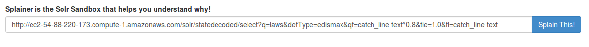
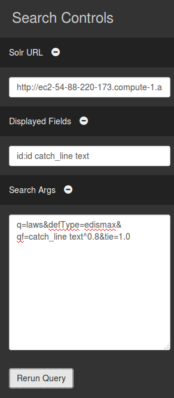
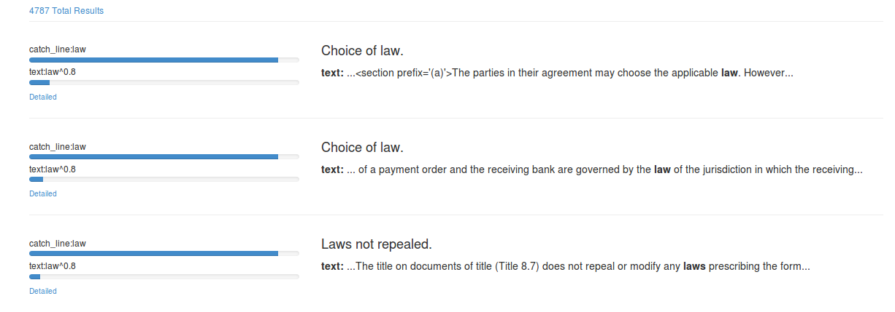

Paste in a Solr query to get started:
Start working with Splainer by entering pasting a Solr URL on the main page!

Tweak Any Settings an needed:
Once you're in the tool you can get to work! In the pull-out on the right, tweak relevancy params, point Splainer at a different Solr instance, and alter which fields Splainer displays.
Solr URL
URL to your Solr request handler For example, http://localhost:8983/solr/collection1/select
Displayed Fields
The equivelant of Solr's fl Specify which parameters to show in the displayed results. Change the default id field by specifying id:alternate_id
Search Args
Search parameters used to query Solr What you'd normally place in the URL to tweak search results

Explore Your Search Results
Understand search scoring at a glance! View search results paired with summarized explain information in one view
Matches
Which field matches mattered most? Click "detailed" to view a summary of the scoring explain information.Documents
Highlighted matches in your content This column highlights matches within your content (if highlighting available)

Contact Us For Help!
Stuck? Found a bug? Contact Us or visit the Github Project
From the  OpenSource Connections team
OpenSource Connections team